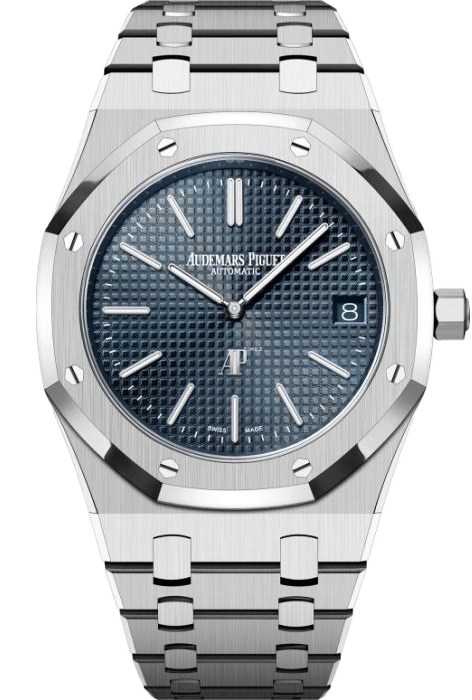
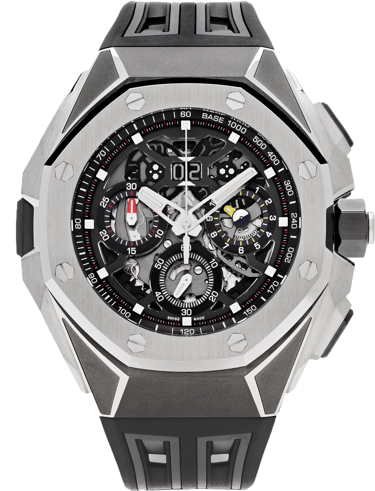
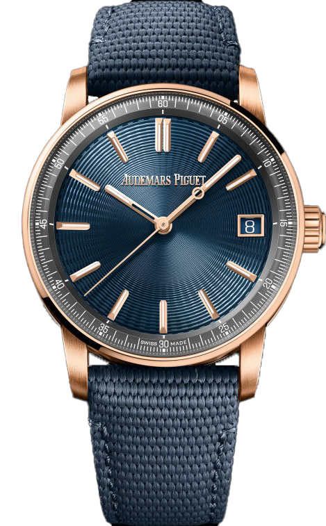

Royal Oak

Royal Oak OFFSHORE

Royal Oak CONCEPT

Code 11.59

Audemars Piguet is a distinguished Swiss watchmaker renowned for blending tradition with bold innovation. Founded in 1875 in Le Brassus, Switzerland, by Jules Louis Audemars and Edward Auguste Piguet, the company has remained family-owned, upholding its founding values of independence and horological excellence.
AP is best known for revolutionizing the luxury watch market with the introduction of the Royal Oak in 1972, designed by Gérald Genta. It was the first high-end sports watch made of stainless steel, recognized for its distinctive octagonal bezel and integrated bracelet. The success of the Royal Oak led to further innovations such as the Royal Oak Offshore, a more robust and sportier variation introduced in 1993, and the Royal Oak Concept series, showcasing cutting-edge materials and futuristic designs.
Audemars Piguet is also respected for its expertise in high complications, including tourbillons, minute repeaters, and perpetual calendars. Each timepiece reflects a balance of technical mastery and avant-garde design. With a strong focus on in-house production and finishing, AP watches are crafted with meticulous care, combining bold aesthetics with mechanical brilliance. This dedication has secured Audemars Piguet a top position in the world of haute horlogerie.